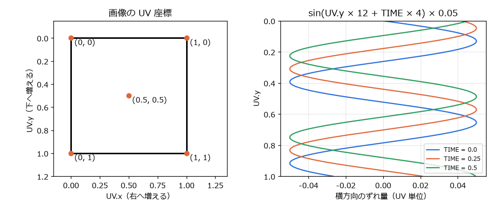
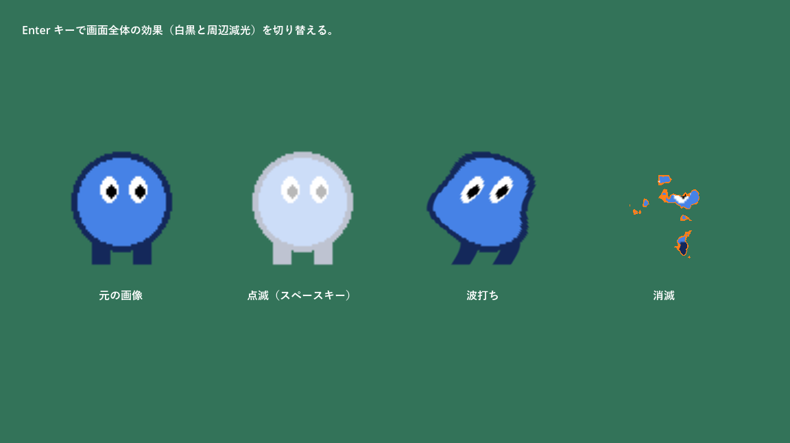
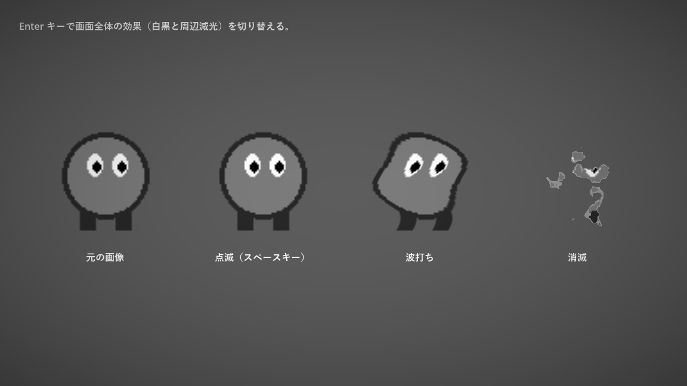

第 16 章 シェーダー入門
被弾したキャラクターを白く光らせる、旗を波打たせる、敵が燃え尽きるように消える、画面全体を白黒にする。こうした見た目の効果は、シェーダーを使うと少ない手間で実現できる。本章では、シェーダーの考え方と Godot のシェーダー言語の基本を、4 つの例で説明する。サンプルは chapter16 フォルダーにある。
シェーダーとは
シェーダー（shader）は、GPU（グラフィックス処理装置）の上で動く小さなプログラムである。画面に描画する物体の頂点ごと、またはピクセルごとに実行され、その位置や色を決める。
CPU で動く GDScript は、命令を 1 つずつ順番に処理する。一方、GPU は同じ処理を大量のデータに対して同時に実行するのが得意である。シェーダーは「1 つのピクセルの色を決める処理」として書き、GPU がそれを画面の全ピクセルに対して並列に実行する。
項目 |
GDScript |
シェーダー |
|---|---|---|
実行する場所 |
CPU |
GPU |
書く処理の単位 |
ゲーム全体の処理の流れ |
1 つの頂点、または 1 つのピクセルの処理 |
得意なこと |
ゲームのルール、状態の管理 |
見た目の効果、大量の要素の一括処理 |
ほかの要素との情報のやり取り |
自由にできる |
ほぼできない。隣のピクセルの計算結果は使えない。 |
例えば、画像の色を白に近づける処理を GDScript でピクセルごとに行うと、画像が大きいほど時間がかかる。シェーダーなら、GPU が全ピクセルを同時に処理するので、毎フレーム実行しても負荷はほとんど問題にならない。
Godot のシェーダー言語
Godot のシェーダーは、GLSL（OpenGL のシェーダー言語）を簡略化した、Godot 独自のシェーダー言語で書く。ファイルの拡張子は .gdshader である。Godot は、このコードを使っているレンダラー（Vulkan、OpenGL など）に合わせて変換する。
シェーダーの種類
ファイルの先頭の shader_type で、シェーダーの種類を指定する。
種類 |
対象 |
|---|---|
|
2D のノードと UI（ |
|
3D の物体 |
|
GPU パーティクルの粒の動き |
|
3D の空 |
|
3D のボリュームフォグ |
処理関数
シェーダーには、決まった名前の関数（処理関数）を書く。canvas_item のシェーダーでは、次の関数を使う。
関数 |
内容 |
|---|---|
|
頂点ごとに実行される。頂点の位置を変えて、形を変形させる。 |
|
ピクセルごとに実行される。そのピクセルの色を決める。 |
|
ピクセルとライトの組み合わせごとに実行される。2D のライトの当たり方を変える。 |
本章の例は、すべて fragment() だけを使う。
型と組み込み変数
シェーダー言語の主な型は次のとおりである。vec4 の各成分は .x、.y、.z、.w のほか、色として .r、.g、.b、.a でも参照できる。COLOR.rgb のように複数の成分をまとめて取り出すこともできる（スウィズル）。
型 |
内容 |
|---|---|
|
浮動小数点数、整数、真偽値 |
|
2 ～ 4 個の |
|
行列 |
|
テクスチャ（画像） |
fragment() の中では、次の組み込み変数を使える。
変数 |
内容 |
|---|---|
|
テクスチャ上の座標。画像の左上が (0, 0)、右下が (1, 1) である。 |
|
ノードに設定されたテクスチャ |
|
入力としては、テクスチャの色に頂点の色（ |
|
ゲームの開始からの経過秒数。時間とともに変化する効果に使う。 |
|
画面上の座標。画面の左上が (0, 0)、右下が (1, 1) である。 |
|
テクスチャの 1 ピクセルの大きさ（UV 単位） |
警告
シェーダー言語は型に厳しい。float の変数に整数の 1 を代入するとエラーになるので、1.0 のように小数点を付けて書く。GDScript の感覚で書くと間違えやすい。
シェーダーを適用する手順
2D のノードにシェーダーを適用する手順は次のとおりである。
シェーダーを適用したいノード（
Sprite2Dなど）を選ぶ。インスペクターの「CanvasItem」→「マテリアル」→「マテリアル」で「新規 ShaderMaterial」を選ぶ。
作られた
ShaderMaterialをクリックして開き、「シェーダー」で「新規 Shader」を選ぶ。保存先を聞かれたら、.gdshaderファイルとして保存する。Shaderをクリックすると、下部パネルの「シェーダーエディター」が開くので、コードを書く。コードの中で
uniformとして宣言した値は、ShaderMaterialのインスペクターの「Shader Parameters」に表示され、エディターから変更できる。
ShaderMaterial はシェーダーと、そのパラメーター（uniform の値）の組を保持するリソースである。同じシェーダーを使い、パラメーターだけが異なるマテリアルを複数作れる。
例 1：点滅（白く光らせる）
最初の例は、画像を指定した色で塗りつぶすシェーダーである。被弾したときにキャラクターを一瞬白く光らせる演出に使う。
1// 画像を指定した色で塗りつぶす（被弾時の点滅などに使う）シェーダー。
2shader_type canvas_item;
3
4// 塗りつぶす色。source_color を付けるとインスペクターでカラーピッカーが使える。
5uniform vec4 flash_color : source_color = vec4(1.0, 1.0, 1.0, 1.0);
6// 塗りつぶしの度合い。0.0 で元の画像、1.0 で flash_color 一色になる。
7uniform float flash_amount : hint_range(0.0, 1.0) = 0.0;
8
9void fragment() {
10 // COLOR には、テクスチャの色に頂点色（modulate など）を掛けた値が入っている。
11 // 透明度はそのままにして、RGB だけを flash_color へ近づける。
12 COLOR.rgb = mix(COLOR.rgb, flash_color.rgb, flash_amount);
13}
uniform は、シェーダーの外（エディターやスクリプト）から値を設定できる変数である。GDScript の @export に近い。: source_color や : hint_range(0.0, 1.0) はヒントと呼ばれ、インスペクターでの入力方法を指定する。source_color を付けた vec4 はカラーピッカーで入力でき、色空間の変換も正しく行われる。
fragment() では、mix(a, b, t) で元の色と flash_color を flash_amount の割合で混ぜている。mix() は \(a(1 - t) + bt\) を計算する関数で、GDScript の lerp() に相当する。透明度（COLOR.a）は変えないので、画像の透明な部分は透明のままになる。
スクリプトから uniform を変更する
uniform の値は、GDScript から ShaderMaterial の set_shader_parameter() で変更できる。Tween の tween_method() と組み合わせると、値を時間とともに変化させられる。
1extends Node2D
2## 4 種類のシェーダーを試すサンプル。
3## スペースキーで点滅、Enter キーで画面効果の切り替えを行う。消滅の効果は自動で繰り返す。
4
5@onready var _flash_material: ShaderMaterial = $FlashSprite.material
6@onready var _dissolve_material: ShaderMaterial = $DissolveSprite.material
7@onready var _screen_effect: ColorRect = $EffectLayer/ScreenEffect
8
9
10func _ready() -> void:
11 # シェーダーの uniform は set_shader_parameter() で変更する。
12 # Tween を使えば、時間をかけて変化させられる。
13 var tween := create_tween().set_loops()
14 tween.tween_method(_set_dissolve_progress, 0.0, 1.0, 2.0)
15 tween.tween_interval(0.5)
16 tween.tween_method(_set_dissolve_progress, 1.0, 0.0, 2.0)
17 tween.tween_interval(0.5)
18
19
20func _unhandled_input(event: InputEvent) -> void:
21 if event.is_action_pressed("jump"):
22 _flash()
23 elif event.is_action_pressed("ui_accept"):
24 _screen_effect.visible = not _screen_effect.visible
25
26
27## 白く光ってから 0.3 秒かけて元に戻る。
28func _flash() -> void:
29 var tween := create_tween()
30 tween.tween_method(_set_flash_amount, 1.0, 0.0, 0.3)
31
32
33func _set_flash_amount(value: float) -> void:
34 _flash_material.set_shader_parameter("flash_amount", value)
35
36
37func _set_dissolve_progress(value: float) -> void:
38 _dissolve_material.set_shader_parameter("progress", value)
_flash() では、flash_amount を 0.3 秒かけて 1.0 から 0.0 に変化させている。tween_method() は、tween_property() と異なり、途中の値を引数にして指定した関数を毎フレーム呼ぶ。プロパティではない値（ここでは uniform）を変化させたいときに使う。
注釈
ShaderMaterial もリソースなので、同じマテリアルを複数のノードで使うと共有される（第 15 章 シーン管理とデータ）。1 体の敵を光らせたつもりが、同じマテリアルを使う敵が全員光ってしまう、ということが起こる。ノードごとに別の値にしたい場合は、マテリアルのインスペクターで「リソース」→「シーン固有」（resource_local_to_scene）をオンにする。シーンのインスタンスごとに、マテリアルが複製されるようになる。
例 2：波打ち
2 つ目の例は、画像を横方向に波打たせるシェーダーである。テクスチャを読み取る座標をずらすことで、画像を変形させる。
1// 画像を横方向に波打たせるシェーダー。旗や水面の揺らぎを表現する。
2shader_type canvas_item;
3
4uniform float amplitude = 0.05; // 揺れ幅（UV 座標の単位。画像の幅に対する割合）
5uniform float frequency = 12.0; // 縦方向に並ぶ波の細かさ
6uniform float speed = 4.0; // 波が流れる速さ
7
8void fragment() {
9 vec2 uv = UV;
10 // 行（y）ごとに、時間とともに変化する量だけ横にずらして読み取る。
11 uv.x += sin(uv.y * frequency + TIME * speed) * amplitude;
12 COLOR = texture(TEXTURE, uv);
13}
texture(TEXTURE, uv) は、テクスチャの uv の位置の色を読み取る関数である。通常は UV の位置を読むので画像がそのまま表示されるが、この例では uv.x を少しずらした位置を読んでいる。ずらす量は UV.y（画像の上下の位置）と TIME で決まるので、行ごとにずれ方が違い、時間とともに変化する。


図 32 UV 座標（左）と、波打ちシェーダーのずらし量（右）
右の図は、横軸がずらす量、縦軸が UV.y である。TIME が増えると波の形が下へ流れていく。
例 3：消滅
3 つ目の例は、ノイズ画像を使って、画像が燃え尽きるように消えていくシェーダーである。
1// ノイズ画像を使って、画像が燃え尽きるように消えていくシェーダー。
2shader_type canvas_item;
3
4uniform sampler2D noise_texture; // 消える順番を決めるノイズ画像
5uniform float progress : hint_range(0.0, 1.0) = 0.0; // 0.0 で元の画像、1.0 で完全に消える
6uniform vec4 edge_color : source_color = vec4(1.0, 0.5, 0.1, 1.0); // 消える境目の色
7uniform float edge_width = 0.05; // 境目の太さ
8
9void fragment() {
10 float noise = texture(noise_texture, UV).r;
11 // ノイズの値が progress より小さい部分は描画しない。
12 if (noise < progress) {
13 discard;
14 }
15 // 消える直前の部分を edge_color で塗り、燃えているように見せる。
16 if (noise < progress + edge_width && progress > 0.0) {
17 COLOR.rgb = edge_color.rgb;
18 }
19}
noise_texture には、白と黒がまだらに分布したノイズ画像を設定する。サンプルでは、Godot の NoiseTexture2D リソース（FastNoiseLite で生成するノイズ）を使っている。インスペクターの uniform の欄で「新規 NoiseTexture2D」を選び、その「ノイズ」で「新規 FastNoiseLite」を選べば作れる。
ピクセルごとにノイズの値（0.0 ～ 1.0）を読み、それが progress より小さければ discard でそのピクセルを描画しない。progress を 0.0 から 1.0 へ増やすと、ノイズの値が小さい部分から順に消えていく。消える境目のすぐ手前の部分は edge_color で塗り、燃えているように見せている。
shader_demo.gd では、tween_method() で progress を 2 秒かけて 0.0 から 1.0 まで変化させ、また戻す動きを繰り返している。


図 33 shader_demo.tscn の実行結果（左から元の画像、点滅、波打ち、消滅）
例 4：画面全体の効果
最後の例は、画面全体を白黒にし、周辺を暗くする（周辺減光、ビネット）シェーダーである。個々の画像ではなく、すでに描画された画面の内容を加工する。
1// 画面全体を白黒にし、周囲を暗くするシェーダー。画面全体を覆う ColorRect に設定する。
2shader_type canvas_item;
3
4// 描画済みの画面の内容を読み取るためのテクスチャ
5uniform sampler2D screen_texture : hint_screen_texture, filter_linear_mipmap;
6uniform float grayscale : hint_range(0.0, 1.0) = 1.0; // 白黒の度合い
7uniform float vignette : hint_range(0.0, 2.0) = 0.8; // 周辺を暗くする強さ
8
9void fragment() {
10 vec3 color = textureLod(screen_texture, SCREEN_UV, 0.0).rgb;
11 // 人の目の感度に合わせた重みで明るさ（輝度）を求める。
12 float luminance = dot(color, vec3(0.299, 0.587, 0.114));
13 color = mix(color, vec3(luminance), grayscale);
14 // 画面の中心からの距離が大きいほど暗くする。
15 float distance_from_center = distance(SCREEN_UV, vec2(0.5));
16 color *= 1.0 - vignette * distance_from_center * distance_from_center;
17 COLOR = vec4(color, 1.0);
18}
hint_screen_texture を付けた sampler2D の uniform は、このノードより奥に描画済みの画面の内容になる。SCREEN_UV で現在のピクセルの画面上の位置を読み取り、色を加工して COLOR に代入している。
白黒にする処理では、赤、緑、青に人の目の感度に応じた重みを付けて足し合わせ、明るさ（輝度）を求めている。
周辺減光では、画面の中心 (0.5, 0.5) からの距離の 2 乗に比例して暗くしている。
このシェーダーは、画面全体を覆う ColorRect に設定して使う。サンプルでは、CanvasLayer の子に「Rect全面」の ColorRect を置き、マウスのフィルターを Ignore にしている（第 13 章 UI）。CanvasLayer に置くことで、カメラが動いても常に画面全体を覆い、ほかのノードより手前に描画される。Enter キーで表示・非表示を切り替えられる。


図 34 画面全体の効果を有効にしたところ
ビジュアルシェーダー
Godot には、コードを書く代わりに、ノードを線でつないでシェーダーを作るビジュアルシェーダー（VisualShader）もある。「新規 Shader」の代わりに「新規 VisualShader」を選ぶと、ノードを並べて編集する画面になる。処理の流れが目で見えるので、試行錯誤しながら効果を作るのに向く。作れる効果はコードのシェーダーと同じである。
シェーダーを書くときの注意
ピクセル数だけ実行される：
fragment()は描画するピクセルの数だけ実行される。画面全体を覆うシェーダーでは、1 フレームに数十万回から数百万回実行されるので、重いループなどは避ける。初回の表示で一瞬止まることがある：シェーダーは、初めて使われるときに GPU 用にコンパイルされる。ゲームの途中で初めて登場する効果は、その瞬間にわずかな引っかかりが出ることがある。
デバッグが難しい：シェーダーには
print()がない。途中の値を確かめたいときは、その値をCOLORに出力して色として確認する。
シェーダーの考え方は、Godot に限らず、ほかのゲームエンジンや Web の WebGL でも共通である。TIME や UV を使って色を計算する練習を重ねると、表現の幅が大きく広がる。参考になる資料は付録 D にまとめた。